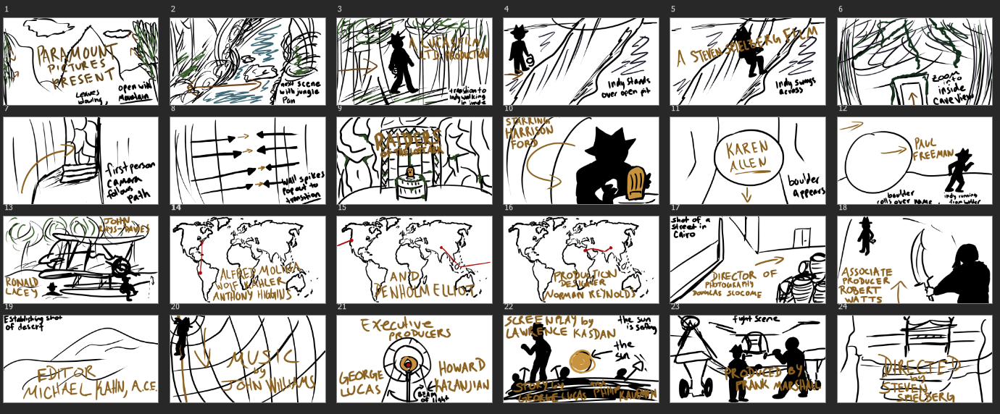

Animated Opening Credits
Since I was a child I have always loved the Indiana Jones movies, so I wanted to make a tribute piece as a project. I created an animated opening credits sequence for the film Raiders of the Lost Ark. This was only my second animation, so learning to use the tools provided in Adobe Animate was fun. I also enjoyed drawing all of the pieces in Adobe Photoshop and Illustrator and putting them together.
The Process
Before I could start animating, I needed to make a storyboard to map out what I had planned. I decided to watch the film and draw a quick sketch in Adobe Photoshop of some scenes that stood out to me. From these and a few more I added, I created the storyboard.
Designing the Art


My next step was to create the assets I needed for animation. Using Adobe Illustrator, I created a silhouette of Indiana Jones. I created each limb in a separate layer so I could later manipulate the body while animating. This was helpful for running, walking, and swinging from his whip. After my character model had been finished, I moved onto making each of the background scenes. I drew each of these backdrops in Photoshop. Moving into Adobe Animate, I carefully created each scene by hand.
The Final Project
After piecing together my drawings in Animate and adding animation to each scene, I added the film credit text in Premiere Pro. Even though I had to cut some scenes from my storyboard, I was still very happy with the way my animation turned out. It was an incredibly fun learning experience for me and seeing the finished product was truly great.